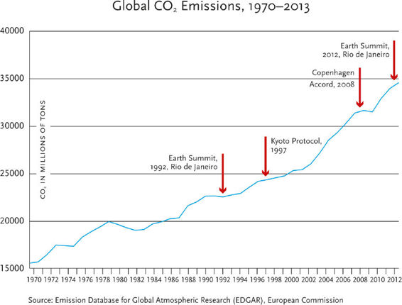

Modernity is a deal. All of us sign up to this deal on the day we are born, and it regulates our lives until the day we die. Very few of us can ever rescind or transcend this deal. It shapes our food, our jobs and our dreams, and it decides where we dwell, whom we love and how we pass away.
At first sight, modernity looks like an extremely complicated deal, hence few try to understand what they have signed up to. It’s like when you download some software and are asked to sign an accompanying contract which is dozens of pages of legalese; you take one look at it, immediately scroll down to the last page, tick ‘I agree’ and forget about it. Yet in fact modernity is a surprisingly simple deal. The entire contract can be summarised in a single phrase: humans agree to give up meaning in exchange for power.
Up until modern times, most cultures believed that humans play a part in some great cosmic plan. The plan was devised by the omnipotent gods, or by the eternal laws of nature, and humankind could not change it. The cosmic plan gave meaning to human life, but also restricted human power. Humans were much like actors on a stage. The script gave meaning to their every word, tear and gesture – but placed strict limits on their performance. Hamlet cannot murder Claudius in Act I, or leave Denmark and go to an ashram in India. Shakespeare won’t allow it. Similarly, humans cannot live for ever, they cannot escape all diseases, and they cannot do as they please. It’s not in the script.
In exchange for giving up power, premodern humans believed that their lives gained meaning. It really mattered whether they fought bravely on the battlefield, whether they supported the lawful king, whether they ate forbidden foods for breakfast or whether they had an affair with the next-door neighbour. This created some inconveniences, of course, but it gave humans psychological protection against disasters. If something terrible happened – such as war, plague or drought – people consoled themselves that ‘We all play a role in some great cosmic drama, devised by the gods, or by the laws of nature. We are not privy to the script, but we can rest assured that everything happens for a purpose. Even this terrible war, plague and drought have their place in the greater scheme of things. Furthermore, we can count on the playwright that the story surely has a good ending. So even the war, plague and drought will work out for the best – if not here and now, then in the afterlife.’
Modern culture rejects this belief in a great cosmic plan. We are not actors in any larger-than-life drama. Life has no script, no playwright, no director, no producer – and no meaning. To the best of our scientific understanding, the universe is a blind and purposeless process, full of sound and fury but signifying nothing. During our infinitesimally brief stay on our tiny speck of a planet, we fret and strut this way and that, and then are heard of no more.
Since there is no script, and since humans fulfil no role in any great drama, terrible things might befall us and no power will come to save us, or give meaning to our suffering. There won’t be a happy ending, or a bad ending, or any ending at all. Things just happen, one after the other. The modern world does not believe in purpose, only in cause. If modernity has a motto, it is ‘shit happens’.
On the other hand, if shit just happens, without any binding script or purpose, then humans too are not limited to any predetermined role. We can do anything we want – provided we can find a way. We are constrained by nothing except our own ignorance. Plagues and droughts have no cosmic meaning – but we can eradicate them. Wars are not a necessary evil on the way to a better future – but we can make peace. No paradise awaits us after death – but we can create paradise here on earth, and live in it for ever, if we just manage to overcome some technical difficulties.
If we invest money in research, then scientific breakthroughs will accelerate technological progress. New technologies will fuel economic growth, and a growing economy could dedicate even more money to research. With each passing decade we will enjoy more food, faster vehicles and better medicines. One day our knowledge will be so vast and our technology so advanced that we could distil the elixir of eternal youth, the elixir of true happiness, and any other drug we might possibly desire – and no god will stop us.
The modern deal thus offers humans an enormous temptation, coupled with a colossal threat. Omnipotence is in front of us, almost within our reach, but below us yawns the abyss of complete nothingness. On the practical level, modern life consists of a constant pursuit of power within a universe devoid of meaning. Modern culture is the most powerful in history, and it is ceaselessly researching, inventing, discovering and growing. At the same time, it is plagued by more existential angst than any previous culture.
This chapter discusses the modern pursuit of power. The next chapter will examine how humankind has used its growing power to somehow sneak meaning back into the infinite emptiness of the cosmos. Yes, we moderns have promised to renounce meaning in exchange for power; but there’s nobody out there to hold us to our promise. We think we are smart enough to enjoy the full benefits of the modern deal, without paying its price.
Why Bankers are Different from Vampires
The modern pursuit of power is fuelled by the alliance between scientific progress and economic growth. For most of history science progressed at a snail’s pace, while the economy was in deep freeze. The gradual increase in human population did lead to a corresponding increase in production, and sporadic discoveries sometimes resulted even in per capita growth, but this was a very slow process.
If in AD 1000 a hundred villagers produced a hundred tons of wheat, and in AD 1100, 105 villagers produced 107 tons of wheat, this growth didn’t change the rhythms of life or the sociopolitical order. Whereas today everyone is obsessed with growth, in the premodern era people were oblivious to it. Princes, priests and peasants assumed that human production was more or less stable, that one person could enrich himself only by pilfering somebody else and that their grandchildren were unlikely to enjoy a better standard of living.
This stagnation resulted to a large extent from the difficulties involved in financing new projects. Without proper funding, it wasn’t easy to drain swamps, construct bridges and build ports – not to mention engineer new wheat strains, discover new energy sources or open new trade routes. Funds were scarce because there was little credit in those days; there was little credit because people had no belief in growth; and people didn’t believe in growth because the economy was stagnant. Stagnation thereby perpetuated itself.
Suppose you live in a medieval town that suffers from annual outbreaks of dysentery. You resolve to find a cure. You need funding to set up a lab, buy medicinal herbs and exotic chemicals, pay assistants and travel to consult with famous doctors. You also need money to feed yourself and your family while you are busy with your research. But you don’t have much money. You can approach the local lumberjack, blacksmith and baker and ask them to fulfil all your needs for a few years, promising that when you finally discover the cure and become rich, you will pay your debts.
Unfortunately, the lumberjack, blacksmith and baker are unlikely to agree. They need to feed their families today, and they have no faith in miracle medicines. They weren’t born yesterday, and in all their years they have never heard of anyone finding a new medicine for some dreaded disease. If you want provisions – you must pay cash. But how can you have enough money when you haven’t discovered the medicine yet, and all your time is taken up with research? Reluctantly, you go back to tilling your field, dysentery keeps tormenting the townsfolk, nobody tries to develop new remedies, and not a single gold coin changes hands. That’s how the economy froze, and science stood still.
The cycle was eventually broken in the modern age thanks to people’s growing trust in the future, and the resulting miracle of credit. Credit is the economic manifestation of trust. Today, if I want to develop a new drug but I don’t have enough money, I can get a loan from the bank, or turn to private investors and venture capital funds. When Ebola erupted in West Africa in the summer of 2014, what do you think happened to the shares of pharmaceutical companies that were busy developing anti-Ebola drugs and vaccines? They skyrocketed. Tekmira shares rose by 50 per cent and BioCryst shares by 90 per cent. In the Middle Ages, the outbreak of a plague caused people to raise their eyes towards heaven, and pray to God to forgive them for their sins. Today, when people hear of some new deadly epidemic, they pick up the phone and call their broker. For the stock exchange, even an epidemic is a business opportunity.
If enough new ventures succeed, people’s trust in the future increases, credit expands, interest rates fall, entrepreneurs can raise money more easily and the economy grows. People consequently have even greater trust in the future, the economy keeps growing and science progresses with it.
It sounds simple on paper. Why, then, did humankind have to wait until the modern era for economic growth to gather momentum? For thousands of years people had little faith in future growth not because they were stupid, but because it contradicts our gut feelings, our evolutionary heritage and the way the world works. Most natural systems exist in equilibrium, and most survival struggles are a zero-sum game in which one can prosper only at the expense of another.
For example, each year roughly the same amount of grass grows in a given valley. The grass supports a population of about 10,000 rabbits, which contains enough slow, dim-witted or unlucky rabbits to provide prey for a hundred foxes. If one fox is very diligent, and captures more rabbits than usual, then another fox will probably starve to death. If all foxes somehow manage to capture more rabbits simultaneously, the rabbit population will crash, and next year many foxes will starve. Even though there are occasional fluctuations in the rabbit market, in the long run the foxes cannot expect to hunt, say, 3 per cent more rabbits per year than the preceding year.
Of course, some ecological realities are more complex, and not all survival struggles are zero-sum games. Many animals cooperate effectively, and a few even give loans. The most famous lenders in nature are vampire bats. These vampires congregate in their thousands inside caves, and every night they fly out to look for prey. When they find a sleeping bird or a careless mammal, they make a small incision in its skin, and suck its blood. Not all bats find a victim every night. In order to cope with the uncertainty of their life, the vampires loan blood to each other. A vampire that fails to find prey will come home and ask for some stolen blood from a more fortunate friend. Vampires remember very well to whom they loaned blood, so at a later date if the friend comes home empty-handed, he will approach his debtor, who will return the favour.
However, unlike human bankers, vampires never charge interest. If vampire A loaned vampire B ten centilitres of blood, B will repay the same amount. Nor do vampires use loans in order to finance new businesses or encourage growth in the blood-sucking market – because the blood is produced by other animals, the vampires have no way of increasing production. Though the blood market has its ups and downs, vampires cannot presume that in 2017 there will be 3 per cent more blood than in 2016, and that in 2018 the blood market will again grow by 3 per cent. Consequently, vampires don’t believe in growth.1 For millions of years of evolution, humans lived under similar conditions to vampires, foxes and rabbits. Hence humans too find it difficult to believe in growth.
The Miracle Pie
Evolutionary pressures have accustomed humans to see the world as a static pie. If somebody gets a bigger slice of the pie, somebody else inevitably gets a smaller slice. A particular family or city may prosper, but humankind as a whole is not going to produce more than it produces today. Accordingly, traditional religions such as Christianity and Islam sought ways to solve humanity’s problems with the help of current resources, either by redistributing the existing pie, or by promising us a pie in the sky.
Modernity, in contrast, is based on the firm belief that economic growth is not only possible but is absolutely essential. Prayers, good deeds and meditation can be comforting and inspiring, but problems such as famine, plague and war can only be solved through growth. This fundamental dogma can be summarised in one simple idea: ‘If you have a problem, you probably need more stuff, and in order to have more stuff, you must produce more of it.’
Modern politicians and economists insist that growth is vital for three principal reasons. Firstly, when we produce more, we can consume more, raise our standard of living and allegedly enjoy a happier life. Secondly, as long as humankind multiplies, economic growth is needed merely to stay where we are. For example, in India the annual population growth rate is 1.2 per cent. That means that unless the Indian economy grows each year by at least 1.2 per cent, unemployment will rise, salaries will fall and the average standard of living will decline. Thirdly, even if Indians stop multiplying, and even if the Indian middle class can be satisfied with its present standard of living, what should India do about its hundreds of millions of poverty-stricken citizens? If the economy doesn’t grow, and the pie therefore remains the same size, you can give more to the poor only by taking something from the rich. That will force you to make some very hard choices, and will probably cause a lot of resentment and even violence. If you wish to avoid hard choices, resentment and violence, you need a bigger pie.
Modernity has turned ‘more stuff’ into a panacea applicable to almost all public and private problems, from Islamic fundamentalism through Third World authoritarianism down to a failed marriage. If only countries such as Pakistan and Egypt could keep a healthy growth rate, their citizens would come to enjoy the benefits of private cars and bulging refrigerators, and they would take the path of earthly prosperity instead of following the Islamic pied piper. Similarly, economic growth in countries such as Congo and Myanmar would produce a prosperous middle class which is the bedrock of liberal democracy. And in the case of the disgruntled couple, their marriage will be saved if they just buy a bigger house (so they don’t have to share a cramped office), purchase a dishwasher (so that they stop arguing whose turn it is to do the dishes) and go to expensive therapy sessions twice a week.
Economic growth has thus become the crucial juncture where almost all modern religions, ideologies and movements meet. The Soviet Union, with its megalomaniac Five Year Plans, was as obsessed with growth as the most cut-throat American robber baron. Just as Christians and Muslims both believed in heaven, and disagreed only about how to get there, so during the Cold War both capitalists and communists believed in creating heaven on earth through economic growth, and wrangled only about the exact method.
Today Hindu revivalists, pious Muslims, Japanese nationalists and Chinese communists may declare their adherence to very different values and goals, but they have all come to believe that economic growth is the key for realising their disparate goals. Thus in 2014 the devout Hindu Narendra Modi was elected prime minister of India largely thanks to his success in boosting economic growth in his home state of Gujarat, and thanks to the widely held view that only he could reinvigorate the sluggish national economy. Analogous views have kept the Islamist Recep Tayyip Erdoğan in power in Turkey since 2003. The name of his party – the Justice and Development Party – highlights its commitment to economic development, and the Erdoğan government has indeed managed to maintain impressive growth rates for more than a decade.
Japan’s prime minister, the nationalist Shinzō Abe, came to office in 2012 pledging to jolt the Japanese economy out of two decades of stagnation. His aggressive and somewhat unusual measures to achieve this have been nicknamed Abenomics. Meanwhile in neighbouring China the Communist Party still pays lip service to traditional Marxist–Leninist ideals, but in practice it is guided by Deng Xiaoping’s famous maxims that ‘development is the only hard truth’ and that ‘it doesn’t matter if a cat is black or white, so long as it catches mice’. Which means, in plain language: do anything it takes to promote economic growth, even if Marx and Lenin wouldn’t have been happy with it.
In Singapore, as befits that no-nonsense city state, they followed this line of thinking even further, and pegged ministerial salaries to the national GDP. When the Singaporean economy grows, ministers get a raise, as if that is what their job is all about.2
This obsession with growth may sound self-evident, but only because we live in the modern world. It wasn’t like this in the past. Indian maharajas, Ottoman sultans, Kamakura shoguns and Han emperors seldom staked their political fortunes on ensuring economic growth. That Modi, Erdoğan, Abe and Chinese president Xi Jinping all bet their careers on economic growth testifies to the almost religious status growth has managed to acquire throughout the world. Indeed, it may not be wrong to call the belief in economic growth a religion, because it now purports to solve many if not most of our ethical dilemmas. Since economic growth is allegedly the source of all good things, it encourages people to bury their ethical disagreements and adopt whichever course of action maximises long-term growth. Thus Modi’s India is home to thousands of sects, parties, movements and gurus, yet though their ultimate aims may differ, they all have to pass through the same bottleneck of economic growth, so why not pull together in the meantime?
The credo of ‘more stuff’ accordingly urges individuals, firms and governments to discount anything that might hamper economic growth, such as preserving social equality, ensuring ecological harmony or honouring your parents. In the Soviet Union, when people thought that state-controlled communism was the fastest way to grow, anything that stood in the way of collectivisation was bulldozed, including millions of kulaks, the freedom of expression and the Aral Sea. Nowadays it is generally accepted that some version of free-market capitalism is a much more efficient way of ensuring long-term growth, hence rich farmers and freedom of expression are protected, but ecological habitats, social structures and traditional values that stand in the way of free-market capitalism are destroyed and dismantled.
Take, for example, a software engineer making $250 per hour working for some hi-tech start-up. One day her elderly father has a stroke. He now needs help with shopping, cooking and even showering. She could move her father to her own house, leave home later in the morning, come back earlier in the evening and take care of her father personally. Both her income and the start-up’s productivity would suffer, but her father would enjoy the care of a respectful and loving daughter. Alternatively, the engineer could hire a Mexican carer who, for $25 per hour, would live with the father and provide for all his needs. That would mean business as usual for the engineer and her start-up, and even the carer and the Mexican economy would benefit. What should the engineer do?
Free-market capitalism has a firm answer. If economic growth demands that we loosen family bonds, encourage people to live away from their parents, and import carers from the other side of the world – so be it. This answer, however, involves an ethical judgement rather than a factual statement. No doubt, when some people specialise in software engineering while others spend their time taking care of the elderly, we can produce more software and give old people more professional care. Yet is economic growth more important than family bonds? By daring to make such ethical judgements, free-market capitalism has crossed the border from the land of science to that of religion.
Most capitalists would probably dislike the title of religion, but as religions go, capitalism can at least hold its head high. Unlike other religions that promise us a pie in the sky, capitalism promises miracles here on earth – and sometimes even provides them. Much of the credit for overcoming famine and plague belongs to the ardent capitalist faith in growth. Capitalism even deserves some kudos for reducing human violence and increasing tolerance and cooperation. As the next chapter explains, there are additional factors at play here, but capitalism did make an important contribution to global harmony by encouraging people to stop viewing the economy as a zero-sum game, in which your profit is my loss, and instead see it as a win–win situation, in which your profit is also my profit. This has probably helped global harmony far more than centuries of Christian preaching about loving your neighbour and turning the other cheek.
From its belief in the supreme value of growth, capitalism deduces its number one commandment: thou shalt invest thy profits in increasing growth. For most of history princes and priests wasted their profits on flamboyant carnivals, sumptuous palaces and unnecessary wars. Alternatively, they put gold coins in an iron chest, sealed it and buried it in a dungeon. Today, devout capitalists use their profits to hire new employees, enlarge the factory or develop a new product.
If they don’t know how to do it themselves, they give their money to somebody who does, such as bankers and venture capitalists. The latter lend the money to various entrepreneurs. Farmers take loans to plant new wheat fields, contractors build new houses, energy corporations explore new oil fields, and arms factories develop new weapons. The profits from all these activities enable the entrepreneurs to repay the loans with interest. We now have not only more wheat, houses, oil and weapons – but also more money, which the banks and funds can again lend. This wheel will never stop, at least not according to capitalism. We will never reach a moment when capitalism says: ‘That’s it. You have grown enough. You can now take it easy.’ If you want to know why the capitalist wheel is unlikely ever to stop, talk for an hour with a friend who has just earned $100,000 and wonders what to do with it.
‘The banks offer such low interest rates,’ he would complain. ‘I don’t want to put my money in a savings account that pays hardly 0.5 per cent a year. You can make perhaps 2 per cent in government bonds. My cousin Richie bought a flat in Seattle last year, and he has already made 20 per cent on his investment! Maybe I should go into real estate too; but everybody is saying there’s a new real-estate bubble. So what do you think about the stock exchange? A friend told me the best deal these days is to buy an ETF that follows emerging economies, like Brazil or China.’ As he stops for a moment to breathe, you ask, ‘Well, why not just be satisfied with your $100,000?’ He will explain to you better than I can why capitalism will never stop.
This lesson is hammered home even to children and teenagers through ubiquitous capitalist games. Premodern games such as chess assumed a stagnant economy. You begin a game of chess with sixteen pieces, and you never finish a game with more. In rare cases a pawn may be transformed into a queen, but you cannot produce new pawns, nor can you upgrade your knights into tanks. So chess players never have to think about investment. In contrast, many modern board games and computer games revolve around investment and growth.
Particularly telling are civilisation-style strategy games, such as Minecraft, The Settlers of Catan or Sid Meier’s Civilization. The game may be set in the Middle Ages, in the Stone Age or in some imaginary fairy land, but the principles always remain the same – and they are always capitalist. Your aim is to establish a city, a kingdom or maybe an entire civilisation. You begin from a very modest base, perhaps just a village and its nearby fields. Your assets provide you with an initial income of wheat, wood, iron or gold. You then have to invest this income wisely. You have to choose between unproductive but still necessary tools such as soldiers, and productive assets such as more villages, fields and mines. The winning strategy is usually to invest the barest minimum in non-productive essentials, while maximising your productive assets. Establishing additional villages means that next turn you will have a larger income that would enable you not only to buy more soldiers (if necessary), but simultaneously to increase your investment in production. Soon you could upgrade your villages to towns, build universities, harbours and factories, explore the seas and oceans, establish your civilisation and win the game.
The Ark Syndrome
Yet can the economy actually keep growing for ever? Won’t it eventually run out of resources – and grind to a halt? In order to ensure perpetual growth, we must somehow discover an inexhaustible store of resources.
One solution is to explore and conquer new lands and territories. For centuries, the growth of the European economy and the expansion of the capitalist system indeed relied heavily on overseas imperial conquests. However, there are only so many islands and continents on earth. Some entrepreneurs hope eventually to explore and conquer new planets and even galaxies, but in the meantime, the modern economy has had to find a better method of expanding.
Science has provided modernity with the alternative. The fox economy cannot grow, because foxes don’t know how to produce more rabbits. The rabbit economy stagnates, because rabbits cannot make the grass grow faster. But the human economy can grow because humans can discover new materials and sources of energy.
The traditional view of the world as a pie of a fixed size presupposes there are only two kinds of resources in the world: raw materials and energy. But in truth, there are three kinds of resources: raw materials, energy and knowledge. Raw materials and energy are exhaustible – the more you use, the less you have. Knowledge, in contrast, is a growing resource – the more you use, the more you have. Indeed, when you increase your stock of knowledge, it can give you more raw materials and energy as well. If I invest $100 million searching for oil in Alaska and I find it, then I now have more oil, but my grandchildren will have less of it. In contrast, if I invest $100 million researching solar energy, and I find a new and more efficient way of harnessing it, then both I and my grandchildren will have more energy.
For thousands of years, the scientific road to growth was blocked because people believed that holy scriptures and ancient traditions already contained all the important knowledge the world had to offer. A corporation that believed all the oil fields in the world had already been discovered would not waste time and money searching for oil. Similarly, a human culture that believed it already knew everything worth knowing would not bother searching for new knowledge. This was the position of most premodern human civilisations. However, the Scientific Revolution freed humankind from this conviction. The greatest scientific discovery was the discovery of ignorance. Once humans realised how little they knew about the world, they suddenly had a very good reason to seek new knowledge, which opened up the scientific road to progress.
With each passing generation, science helped discover fresh sources of energy, new kinds of raw material, better machinery and novel production methods. Consequently, in 2016 humankind commands far more energy and raw materials than ever before, and production skyrockets. Inventions such as the steam engine, the internal combustion engine and the computer have created whole new industries from scratch. As we look twenty years to the future, we confidently expect to produce and consume far more in 2036 than we do today. We trust nanotechnology, genetic engineering and artificial intelligence to revolutionise production yet again, and to open whole new sections in our ever-expanding supermarkets.
We therefore have a good chance of overcoming the problem of resource scarcity. The real nemesis of the modern economy is ecological collapse. Both scientific progress and economic growth take place within a brittle biosphere, and as they gather steam, so the shock waves destabilise the ecology. In order to provide every person in the world with the same standard of living as affluent Americans, we would need a few more planets – but we only have this one. If progress and growth do end up destroying the ecosystem, the cost will be dear not merely to vampires, foxes and rabbits, but also to Sapiens. An ecological meltdown will cause economic ruin, political turmoil, a fall in human standards of living, and it might threaten the very existence of human civilisation.
We could lessen the danger by slowing down the pace of progress and growth. If this year investors expect to get a 6 per cent return on their portfolios, in ten years they will be satisfied with a 3 per cent return, in twenty years only 1 per cent, and in thirty years the economy will stop growing and we’ll be happy with what we’ve already got. Yet the creed of growth firmly objects to such a heretical idea. Instead, it suggests we should run even faster. If our discoveries destabilise the ecosystem and threaten humanity, then we should discover something to protect ourselves. If the ozone layer dwindles and exposes us to skin cancer, we should invent better sunscreen and better cancer treatments, thereby also promoting the growth of new sunscreen factories and cancer centres. If all the new industries pollute the atmosphere and the oceans, causing global warming and mass extinctions, then we should build for ourselves virtual worlds and hi-tech sanctuaries that will provide us with all the good things in life even if the planet is as hot, dreary and polluted as hell.
Beijing has already become so polluted that people avoid the outdoors, and wealthy Chinese pay thousands of dollars for indoor air-purifying systems. The super-rich build protective contraptions even over their yards. In 2013 the International School of Beijing, which caters for the children of foreign diplomats and upper-class Chinese, went a step further, and constructed a giant $5 million dome over its six tennis courts and its playing fields. Other schools are following suit, and the Chinese air-purification market is booming. Of course most Beijing residents cannot afford such luxuries in their homes, nor can they afford to send their kids to the International School.3
Humankind finds itself locked into a double race. On the one hand, we feel compelled to speed up the pace of scientific progress and economic growth. A billion Chinese and a billion Indians want to live like middle-class Americans, and they see no reason why they should put their dreams on hold when the Americans are unwilling to give up their SUVs and shopping malls. On the other hand, we must stay at least one step ahead of ecological Armageddon. Managing this double race becomes more difficult by the year, because every stride that brings the Delhi slum-dwellers closer to the American Dream also brings the planet closer to the brink.
The good news is that for hundreds of years humankind has enjoyed a growing economy without falling prey to ecological meltdown. Many other species have perished in the process, and humans too have faced a number of economic crises and ecological disasters, but so far we have always managed to pull through. Yet future success is not guaranteed by some law of nature. Who knows if science will always be able to simultaneously save the economy from freezing and the ecology from boiling. And since the pace just keeps accelerating, the margins for error keep narrowing. If previously it was enough to invent something amazing once a century, today we need to come up with a miracle every two years.
We should also be concerned that an ecological apocalypse might have different consequences for different human castes. There is no justice in history. When disaster strikes, the poor almost always suffer far more than the rich, even if the rich caused the tragedy in the first place. Global warming is already affecting the lives of poor people in arid African countries more than the lives of affluent Westerners. Paradoxically, the very power of science may increase the danger, because it makes the rich complacent.
Consider greenhouse gas emissions. Most scholars and an increasing number of politicians recognise the reality of global warming and the magnitude of the danger. Yet this recognition has so far failed to change our actual behaviour. We talk a lot about global warming, but in practice humankind is unwilling to make serious economic, social or political sacrifices to stop the catastrophe. Between 2000 and 2010 emissions didn’t decrease at all. On the contrary, they increased at an annual rate of 2.2 per cent, compared with an annual increase rate of 1.3 per cent between 1970 and 2000.4 The 1997 Kyoto protocol on reduction of greenhouse gas emissions aimed merely to slow down global warming rather than stop it, yet the world’s number one polluter – the United States – refused to ratify it, and has made no attempt to significantly reduce its emissions, for fear of slowing down its economic growth.5

All the talk about global warming, and all the conferences, summits and protocols, have so far failed to curb global greenhouse emissions. If you look closely at the graph you see that emissions go down only during periods of economic crises and stagnation. Thus the small downturn in greenhouse emissions in 2008–9 was due not to the signing of the Copenhagen Accord, but to the global financial crisis.
Source: Emission Database for Global Atmospheric Research (EDGAR), European Commission.
In December 2015 more ambitious targets were set in the Paris Agreement, which calls for limiting average temperature increase to 1.5 degrees above pre-industrial levels. But many of the painful steps necessary to reach this aim have conveniently been postponed to after 2030, or even to the second half of the twenty-first century, effectively passing the hot potato to the next generation. Current administrations would be able to reap immediate political benefits from looking green, while the heavy political price of reducing emissions (and slowing growth) is bequeathed to future administrations. Even so, at the time of writing (January 2016) it is far from certain that the USA and other leading polluters will ratify the Paris Agreement. Too many politicians and voters believe that as long as the economy grows, scientists and engineers could always save us from doomsday. When it comes to climate change, many growth true-believers do not just hope for miracles – they take it for granted that the miracles will happen.
How rational is it to risk the future of humankind on the assumption that future scientists will make some unknown discoveries? Most of the presidents, ministers and CEOs who run the world are very rational people. Why are they willing to take such a gamble? Maybe because they don’t think they are gambling on their own personal future. Even if bad comes to worse and science cannot hold off the deluge, engineers could still build a hi-tech Noah’s Ark for the upper caste, while leaving billions of others to drown. The belief in this hi-tech Ark is currently one of the biggest threats to the future of humankind and of the entire ecosystem. People who believe in the hi-tech Ark should not be put in charge of the global ecology, for the same reason that people who believe in a heavenly afterlife should not be given nuclear weapons.
And what about the poor? Why aren’t they protesting? If and when the deluge comes, they will bear the full cost of it. However, they will also be the first to bear the cost of economic stagnation. In a capitalist world, the lives of the poor improve only when the economy grows. Hence they are unlikely to support any steps to reduce future ecological threats that are based on slowing down present-day economic growth. Protecting the environment is a very nice idea, but those who cannot pay their rent are worried about their overdraft far more than about melting ice caps.
The Rat Race
Even if we go on running fast enough and manage to fend off both economic collapse and ecological meltdown, the race itself creates huge problems. On the individual level, it results in high levels of stress and tension. After centuries of economic growth and scientific progress, life should have become calm and peaceful, at least in the most advanced countries. If our ancestors knew what tools and resources stand ready at our command, they would have surmised we must be enjoying celestial tranquillity, free of all cares and worries. The truth is very different. Despite all our achievements, we feel a constant pressure to do and produce even more.
We blame ourselves, our boss, the mortgage, the government, the school system. But it’s not really their fault. It’s the modern deal, which we have all signed up to on the day we were born. In the premodern world, people were akin to lowly clerks in a socialist bureaucracy. They punched their card, and then waited for somebody else to do something. In the modern world, we humans run the business. So we are under constant pressure day and night.
On the collective level, the race manifests itself in ceaseless upheavals. Whereas previously social and political systems endured for centuries, today every generation destroys the old world and builds a new one in its place. As the Communist Manifesto brilliantly put it, the modern world positively requires uncertainty and disturbance. All fixed relations and ancient prejudices are swept away, and new structures become antiquated before they can ossify. All that is solid melts into air. It isn’t easy to live in such a chaotic world, and it is even harder to govern it.
Hence modernity needs to work hard to ensure that neither human individuals nor the human collective will try to retire from the race, despite all the tension and chaos it creates. For that purpose, modernity upholds growth as a supreme value for whose sake we should make every sacrifice and risk every danger. On the collective level, governments, firms and organisations are encouraged to measure their success in terms of growth, and to fear equilibrium as if it were the Devil. On the individual level, we are inspired to constantly increase our income and our standard of living. Even if you are quite satisfied with your current conditions, you should strive for more. Yesterday’s luxuries become today’s necessities. If once you could live well in a three-bedroom apartment with one car and a single desktop, today you need a five-bedroom house with two cars and a host of iPods, tablets and smartphones.
It wasn’t very hard to convince individuals to want more. Greed comes easily to humans. The big problem was to convince collective institutions such as states and churches to go along with the new ideal. For millennia, societies strove to curb individual desires and bring them into some kind of balance. It was well known that people wanted more and more for themselves, but when the pie was of a fixed size, social harmony depended on restraint. Avarice was bad. Modernity turned the world upside down. It convinced human collectives that equilibrium is far more frightening than chaos, and because avarice fuels growth, it is a force for good. Modernity accordingly inspired people to want more, and dismantled the age-old disciplines that curbed greed.
The resulting anxieties were assuaged to a large extent by free-market capitalism, which is one reason why this particular ideology has become so popular. Capitalist thinkers repeatedly calm us: ‘Don’t worry, it will be okay. Provided the economy grows, the invisible hand of the market will take care of everything else.’ Capitalism has thus sanctified a voracious and chaotic system that grows by leaps and bounds, without anyone understanding what is happening and where we are rushing. (Communism, which also believed in growth, thought it could prevent chaos and orchestrate growth through state planning. After initial successes, it eventually fell far behind the messy free-market cavalcade.)
Bashing free-market capitalism is high on the intellectual agenda nowadays. Since capitalism dominates our world, we should indeed make every effort to understand its shortcomings, before they cause apocalyptic catastrophes. Yet criticising capitalism should not blind us to its advantages and attainments. So far, it’s been an amazing success – at least if you ignore the potential for future ecological meltdown, and if you measure success by the yardstick of production and growth. In 2016 we may be living in a stressful and chaotic world, but the doomsday prophecies of collapse and violence have not materialised, whereas the scandalous promises of perpetual growth and global cooperation are fulfilled. Although we experience occasional economic crises and international wars, in the long run capitalism has not only managed to prevail, but also to overcome famine, plague and war. For thousands of years priests, rabbis and muftis explained that humans cannot overcome famine, plague and war by their own efforts. Then along came the bankers, investors and industrialists, and within 200 years managed to do exactly that.
So the modern deal promised us unprecedented power – and the promise has been kept. Now what about the price? In exchange for power, the modern deal expects us to give up meaning. How did humans handle this chilling demand? Complying with it could easily have resulted in a dark world, devoid of ethics, aesthetics and compassion. Yet the fact remains that humankind is today not only far more powerful than ever, it is also far more peaceful and cooperative. How did humans manage that? How did morality, beauty and even compassion survive and flourish in a world devoid of gods, of heaven and of hell?
Capitalists are, again, quick to give all the credit to the invisible hand of the market. Yet the market’s hand is blind as well as invisible, and by itself could never have saved human society. Indeed, not even a country fair can maintain itself without the helping hand of some god, king or church. If everything is for sale, including the courts and the police, trust evaporates, credit vanishes and business withers.6 What, then, rescued modern society from collapse? Humankind was salvaged not by the law of supply and demand, but rather by the rise of a new revolutionary religion – humanism.